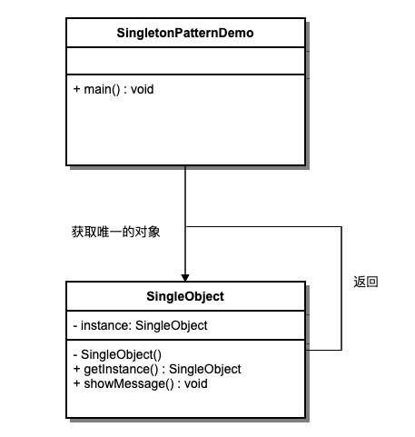

シングルトンパターン
シングルトンパターン（Singleton Pattern）は、Java で最も簡単なデザインパターンの 1 つです。このタイプのデザインパターンは生成に関するパターン（Creational Pattern）に属し、オブジェクトを作成するための最良の方法を提供します。
このパターンは単一のクラスに関係します。そのクラスは自身のオブジェクトを生成する責任を持ち、同時に単一のオブジェクトだけが生成されることを保証します。このクラスは、その唯一のオブジェクトにアクセスする方法を提供し、そのクラスのオブジェクトをインスタンス化せずに直接アクセスできます。
シングルトンパターンは、あるクラスが 1 つのインスタンスのみを持つことを保証し、そのインスタンスにアクセスするためのグローバルなアクセスポイントを提供する生成型デザインパターンです。
注意：
- 1、シングルトンクラスは 1 つのインスタンスのみを持つことができます。
- 2、シングルトンクラスは自分自身で唯一のインスタンスを生成しなければなりません。
- 3、シングルトンクラスは、このインスタンスを他のすべてのオブジェクトに提供しなければなりません。
概要
シングルトンパターン（Singleton Pattern）
意図
あるクラスが 1 つのインスタンスのみを持つことを保証し、そのインスタンスにアクセスするためのグローバルなアクセスポイントを提供する。
主な解決課題
グローバルに使用されるクラスのインスタンスを頻繁に生成・破棄する問題を解決する。
使用するタイミング
インスタンスの数を制御し、システムリソースを節約する必要がある場合。
解決方法
システムにそのシングルトンが既に存在するかどうかを確認し、存在する場合はそのインスタンスを返し、存在しない場合は新しいインスタンスを生成する。
重要なコード
コンストラクタは private である。
適用例
- 1 つのクラスには担任の先生が 1 人だけいる。
- Windows でマルチプロセス・マルチスレッド環境においてファイルを操作する場合、複数のプロセスやスレッドが同時に 1 つのファイルを操作するのを避けるため、唯一のインスタンスを通じて処理する必要があります。
- デバイスマネージャーはシングルトンパターンで設計されています。例えば、コンピュータに 2 台のプリンタがある場合、同じファイルを同時に印刷することを避けます。
長所
- メモリ内にインスタンスが 1 つだけ存在するため、メモリオーバーヘッドを削減します。特に、インスタンスを頻繁に生成・破棄する場合（例: 大学のホームページのページキャッシュを管理する場合）に有効です。
- リソースの多重占有を避けます（例: ファイル書き込み操作）。
短所
- インターフェースがなく、継承できません。
- 単一責任原則と矛盾します。クラスは内部ロジックのみを扱うべきであり、インスタンス化の方法を扱うべきではありません。
使用シーン
- 一意のシリアル番号を生成する。
- WEB のカウンター。リフレッシュのたびにデータベースのカウントを増やすのを避けるため、先にキャッシュしておきます。
- I/O やデータベース接続など、リソースを過度に消費するオブジェクトを作成する場合。
注意事項
- スレッドセーフ：
getInstance()メソッド内で同期ロック（synchronized）を使用する必要があるsynchronized (Singleton.class)複数のスレッドが同時に進入してインスタンスが複数回生成されるのを防ぐ。 - 遅延初期化：インスタンスは最初に
getInstance()メソッドを呼び出したときに生成されます。 - シリアライズとデシリアライズ：書き換え
readResolveメソッドを書き換えて、デシリアライズ時に新しいインスタンスが生成されないようにします。 - リフレクション攻撃：コンストラクタに防護コードを追加して、リフレクションによる新しいインスタンスの生成を防ぎます。
- クラスローダー問題：複雑なクラスローダー環境によって複数のインスタンスが発生する可能性がある問題に注意してください。
構造
シングルトンパターンには、以下の主要な役割が含まれます：
- シングルトンクラス：シングルトンインスタンスを保持するクラス。通常、コンストラクタは private として宣言されます。
- 静的メンバー変数：シングルトンインスタンスを格納するための静的メンバー変数。
- インスタンス取得メソッド：シングルトンインスタンスを取得するための静的メソッド。
- プライベートコンストラクタ：外部からシングルトンクラスを直接インスタンス化するのを防ぎます。
- スレッドセーフ処理：マルチスレッド環境においてシングルトンインスタンスの生成が安全であることを保証します。
実装
私たちが作成するのはSingleObjectクラスです。SingleObjectこのクラスは、private コンストラクタと、それ自身の静的インスタンスを持っています。
SingleObjectこのクラスは、外部がその静的インスタンスを取得するための静的メソッドを提供します。SingletonPatternDemoこのクラスはSingleObjectクラスを使用してSingleObjectオブジェクトを取得します。

ステップ 1
Singleton クラスを作成します。
SingleObject.java
ステップ 2
singleton クラスから唯一のオブジェクトを取得します。
SingletonPatternDemo.java
ステップ 3
プログラムを実行し、結果を出力します：
Hello World!
シングルトンパターンのいくつかの実装方法
シングルトンパターンの実装には複数の方法があります。以下の通りです：
1、遅延初期化方式、スレッドセーフではない
Lazy 初期化を行うか：是
マルチスレッドセーフか：否
実装の難易度：易
説明：この方法は最も基本的な実装方法です。この実装の最大の問題は、マルチスレッドをサポートしないことです。synchronized によるロックがないため、厳密な意味ではシングルトンパターンとは言えません。
この方法は lazy loading（遅延ロード）が顕著ですが、スレッドセーフは要求されておらず、マルチスレッドでは正常に動作しません。
例
次に紹介するいくつかの実装方法はすべてマルチスレッドをサポートしますが、パフォーマンスに違いがあります。
2、遅延初期化方式、スレッドセーフ
Lazy 初期化を行うか：是
マルチスレッドセーフか：是
実装の難易度：易
説明：この方法は優れた lazy loading を備えており、マルチスレッドでうまく動作しますが、効率が非常に低く、99% のケースでは同期は不要です。
長所：最初の呼び出しでのみ初期化するため、メモリの無駄を避けます。
短所：シングルトンを保証するには synchronized によるロックが必要ですが、ロックは効率に影響します。
getInstance() のパフォーマンスはアプリケーションにとって重要ではありません（このメソッドはあまり頻繁に使用されません）。
例
3、即時初期化方式
Lazy 初期化を行うか：否
マルチスレッドセーフか：是
実装の難易度：易
説明：この方法は比較的よく使われますが、ガベージオブジェクトが発生しやすいです。
長所：ロックがないため、実行効率が向上します。
短所：クラスロード時に初期化されるため、メモリを浪費します。
これは classloader メカニズムに基づいてマルチスレッドの同期問題を回避しています。ただし、instance はクラスロード時にインスタンス化されます。クラスロードを引き起こす原因はさまざまですが、シングルトンパターンではほとんどが getInstance メソッドの呼び出しです。しかし、他の方法（または他の静的メソッド）によってクラスロードが発生する可能性も否定できないため、この時点で instance を初期化しても明らかに lazy loading の効果は得られません。
例
4、ダブルチェックロック/二重チェックロック（DCL、つまり double-checked locking）
JDK バージョン：JDK 1.5 以降
Lazy 初期化を行うか：是
マルチスレッドセーフか：是
実装の難易度：やや複雑
説明：この方法は二重ロック機構を採用しており、安全で、マルチスレッド環境でも高いパフォーマンスを維持できます。
getInstance() のパフォーマンスはアプリケーションにとって重要です。
例
5、登録方式/静的内部クラス
Lazy 初期化を行うか：是
マルチスレッドセーフか：是
実装の難易度：概要
説明：この方法は二重チェックロック方式と同じ効果を達成できますが、実装はより簡単です。静的フィールドに遅延初期化を使用する場合は、二重チェックロック方式ではなくこの方法を使用する必要があります。この方法は静的フィールドの場合にのみ適用され、二重チェックロック方式はインスタンスフィールドで遅延初期化が必要な場合に使用できます。
この方法も同様に classloader メカニズムを利用して、instance を初期化する際にスレッドが1つだけであることを保証します。第3の方法と異なる点は、第3の方法では Singleton クラスがロードされれば instance がインスタンス化される（lazy loading 効果が得られない）のに対し、この方法では Singleton クラスがロードされても instance が必ずしも初期化されるわけではないことです。SingletonHolder クラスは積極的に使用されないため、明示的に getInstance メソッドを呼び出して初めて SingletonHolder クラスが明示的にロードされ、instance がインスタンス化されます。考えてみてください。instance のインスタンス化がリソースを多く消費する場合、それを遅延ロードしたいと思うでしょう。一方で、Singleton クラスのロード時にインスタンス化したくない場合もあります。なぜなら、Singleton クラスが他の場所で積極的に使用されてロードされる可能性を排除できないため、その時点で instance をインスタンス化するのは明らかに適切ではないからです。このような場合、この方法は第3の方法よりも合理的です。
例
6、列挙型
JDK バージョン：JDK1.5 以降
Lazy 初期化かどうか：否
マルチスレッドセーフかどうか：是
実装難易度：易
説明：この実装方法はまだ広く採用されていませんが、シングルトンパターンを実装する最良の方法です。より簡潔で、シリアライゼーションメカニズムを自動的にサポートし、複数回のインスタンス化を絶対に防ぎます。
この方法は Effective Java の著者 Josh Bloch が提唱した方法であり、マルチスレッドの同期問題を回避できるだけでなく、シリアライゼーションメカニズムを自動的にサポートし、デシリアライゼーションによる新しいオブジェクトの再作成を防ぎ、複数回のインスタンス化を絶対に防ぎます。ただし、JDK1.5 以降に追加された enum 機能のため、この方法で書くとどうしても馴染みが薄く感じられ、実際の作業でもあまり使われません。
リフレクション攻撃によってプライベートコンストラクタを呼び出すことはできません。
例
経験談：一般的には、第1種と第2種の遅延初期化方式は推奨されず、第3種の先行初期化方式を推奨します。lazy loading 効果を明確に実現する必要がある場合にのみ、第5種の登録方式を使用します。デシリアライゼーションによるオブジェクト作成が関わる場合は、第6種の列挙型方式を試すことができます。他に特別な要件がある場合は、第4種の二重チェックロック方式を検討できます。
その他の拡張
呆的全世界疯狂
197***4949@qq.com
遅延初期化方式と先行初期化方式の根本的な違いは、クラス内のメソッド外で自分のオブジェクトを生成するかどうかにあります。
また、オブジェクトの宣言はすべてプライベート化し、コンストラクタもすべてプライベート化する必要があります。これにより、外部から new でオブジェクトを生成してアクセスすることができなくなります。
先行初期化方式はオブジェクトを宣言して作成します（お腹が空いているから）。遅延初期化方式はオブジェクトを宣言するだけで、そのクラスの getInstance() メソッドを呼び出したときに new でオブジェクトを生成します。
呆的全世界疯狂
197***4949@qq.com
deed
jwd***@qq.com
シングルトンパターンにおける先行初期化方式
class Singleton{ public static String a = "11"; private static byte[] bytes = new byte[100*88]; // 这句就是饿汉模式的核心 private static final Singleton singleton = new Singleton(); private Singleton() {} public static Singleton getInstance(){ return singleton; } }deed
jwd***@qq.com
FingerTipDancer
usa***shington@qq.com
リフレクションメカニズムでシングルトンパターンを破る（列挙型を除く）：
public class BreakSingleton{ public static void main(String[] args) throw Exception{ Class clazz = Class.forName("Singleton"); Constructor c = clazz.getDeclaredConstructor(null); c.setAccessible(true); Singleton s1 = c.newInstance(); Singleton s2 = c.newInstance(); //通过反射，得到的两个不同对象 System.out.println(s1); System.out.println(s2); } }上記の脆弱性を回避する方法：
class Singleton{ private static final Singleton singleton = new Singleton(); private Singleton() { //在构造器中加个逻辑判断,多次调用抛出异常 if(instance!= null){ throw new RuntimeException() } } public static Singleton getInstance(){ return singleton; } }FingerTipDancer
usa***shington@qq.com
FingerTipDancer
usa***shington@qq.com
デシリアライゼーションメカニズムでシングルトンパターンを破る（列挙型を除く）：
public class BreakSingleton{ public static void main(String[] args) throws Exception{ //先根据单例模式创建对象(单例模式所以s1,s2是一样的) Singleton s1=Singleton.getInstance(); Singleton s2=Singleton.getInstance(); //将s1写入本地某个路径 FileOutputStream fos=new FileOutputStream("本地某个路径下文件"); ObjectOutputStream oos=new ObjectOutputStream(fos); oos.writeObject(s1); oos.close(); fos.close(); //从本地某个路径读取写入的对象 ObjectInputStream ois=new ObjectInputStream(new FileInputStream("和上面的本地参数路径相同")); Singleton s3=(Singleton) ois.readObject(); System.out.println(s1); System.out.println(s2); System.out.println(s3);//s3是一个新对象 } }シリアライズ可能なシングルトンパターンの脆弱性を回避する方法：
class Singleton implements Serializable{ private static final Singleton singleton = new Singleton(); private Singleton() { } public static Singleton getInstance(){ return singleton; } //反序列化定义该方法，则不需要创建新对象 private Object readResolve() throws ObjectStreamException{ return singleton; } }FingerTipDancer
usa***shington@qq.com
逆光影者
248***1388@qq.com
登録式シングルトンパターンは、一群のシングルトンパターンを管理するもので、map 内のオブジェクトが同一であることを保証します。Spring で使用されているのもこれに類似したパターンです：
import java.util.Map; import java.util.concurrent.ConcurrentHashMap; public class RegisterSingleton { /** * 登记式单例模式, 保证map中的对象是同一份 */ private static Map<String, Object> map; static { map = new ConcurrentHashMap<>(); map.put(RegisterSingleton.class.getName(), new RegisterSingleton()); } private RegisterSingleton() { System.out.println("this Constructor is called"); } public static Object getInstance(String name) { if (name == null) { name = RegisterSingleton.class.getName(); } if (map.get(name) == null) { try { map.put(name, Class.forName(name).newInstance()); } catch (Exception e) { e.printStackTrace(); } } return map.get(name); } }逆光影者
248***1388@qq.com
卡卡
wuj***e1023@163.com
列挙型でシングルトンパターンを作成する：
public enum EnumSingleton { INSTANCE; public EnumSingleton getInstance(){ return INSTANCE; } } public class User { //私有化构造函数 private User(){ } //定义一个静态枚举类 static enum SingletonEnum{ //创建一个枚举对象，该对象天生为单例 INSTANCE; private User user; //私有化枚举的构造函数 private SingletonEnum(){ user=new User(); } public User getInstnce(){ return user; } } //对外暴露一个获取User对象的静态方法 public static User getInstance(){ return SingletonEnum.INSTANCE.getInstnce(); } } public class Test { public static void main(String [] args){ System.out.println(User.getInstance()); System.out.println(User.getInstance()); System.out.println(User.getInstance()==User.getInstance()); } } // 结果为true卡卡
wuj***e1023@163.com
mcl
979***991@qq.com
実は、先行初期化方式にはもう1つの変種があります：
public class LazyModel { public final static LazyModel INSTANCE = new LazyModel(); int age ; String name; private LazyModel(){} public int getAge() { return age; } public void setAge(int age) { this.age = age; } public String getName() { return name; } public void setName(String name) { this.name = name; } }準備段階で LazyModel の生成がすでに完了しているため、直接使用できます。
mcl
979***991@qq.com
Bob
104***7013@qq.com
二重チェックロック/ダブルチェックロックでは、volatile キーワードを追加して、命令の並べ替えを禁止する必要があります：
public class Singleton{ private static volatile Singleton instance; private Singleton(){} public static Singleton getInstance(){ if(instance == null){ // 判断对象是否以及实例化过，没有则进入加锁代码块，此处可能有多个线程同时进来，等待类对象锁 synchronized(Singleton.class){ // 获取类对象锁，其他线程在外等待，其他线程进来再次判断，如果对象实例化了，则不需要再实例化 if(instance == null){ instance = new Singleton(); } } } return instance; } }Bob
104***7013@qq.com
RUNOOB
429***967@qq.com
シングルトンパターンでは、クラスが自身の唯一のインスタンスを作成し、アプリケーション全体でインスタンスが1つだけ存在することを保証します。これは通常、クラスのコンストラクタをプライベートに設定することで実現され、外部コードがそのクラスのインスタンスを作成するのを防ぎます。クラスは静的メソッドまたはプロパティを提供し、他のオブジェクトがその唯一のインスタンスにアクセスできるようにします。
以下は一般的なシングルトンパターンの例です（遅延初期化方式を使用）：
public class Singleton { private static Singleton instance; private Singleton() { // 私有构造函数 } public static Singleton getInstance() { if (instance == null) { instance = new Singleton(); } return instance; } }上記の例では、Singleton クラスのコンストラクタはプライベートに設定されているため、他のクラスは直接インスタンス化できません。静的メソッド getInstance() を使用して、Singleton クラスの唯一のインスタンスを取得できます。getInstance() メソッドの最初の呼び出し時に新しいインスタンスが作成され、以降の呼び出しでは作成済みのインスタンスが返されます。
ただし、上記の例の遅延初期化方式による実装にはスレッド安全性の問題があります。複数のスレッドが同時に getInstance() メソッドを呼び出すと、複数のインスタンスが作成される可能性があります。この問題を解決するには、二重チェックロックや静的内部クラスによる実装など、スレッドセーフな方法を使用できます。
遅延初期化方式のほかにも、先行初期化方式、静的内部クラス、列挙型など、シングルトンパターンを実装する方法があります。それぞれの方法には長所と短所があるため、特定のシナリオに適した実装方法を選択することが重要です。
注意すべき点として、シングルトンパターンは状況によってはグローバル状態をもたらし、コードのテストや保守を困難にする可能性があります。そのため、シングルトンパターンを使用する際は、コード構造とテスト可能性への影響を慎重に検討し、設計要件を本当に満たしていることを確認する必要があります。
RUNOOB
429***967@qq.com